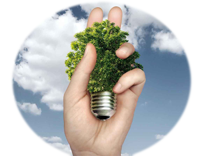
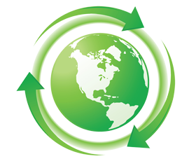
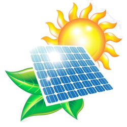
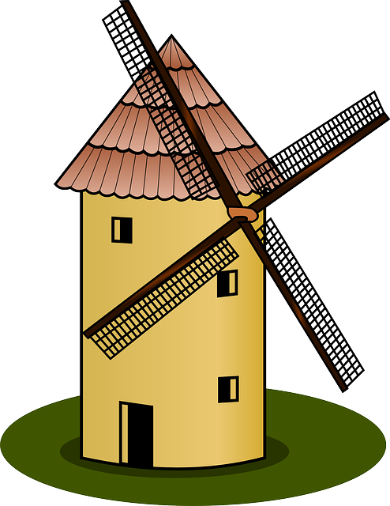
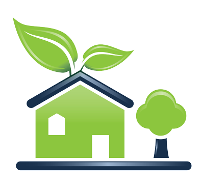

|  |
Fuentes de Energias Renovables |
|
¿Que son las Fuentes de Energias Renovables?
"Se denomina energía renovable a la energía que se obtiene de fuentes naturales virtualmente inagotables, ya sea por la inmensa cantidad de energía que contienen, o porque son capaces de regenerarse por medios naturales.1 Entre las energías renovables se cuentan la eólica, geotérmica, hidroeléctrica, mareomotriz, solar, undimotriz, la biomasa y los biocarburantes"
|
Tipos de Energias Renovables |
|
 Energia Mareomotrz (mareas) "La más conocida es la de las mareas, aunque también se trabaja en la energía de las olas y la de los gradientes de temperatura entre el fondo y superficie del océano." LEER MÁS |
Energía hidráulica (embalses) "Aprovecha la energía de la caída del agua desde cierta altura. Este tipo de energía se convierte en energía cinética. El agua a gran velocidad mueve las turbinas y a través de generadores se trasforma en electricidad" LEER MÁS |
 Energía solar (Sol) "LLa energía solar trasforma los rayos del sol en electricidad. Lo hace de forma directa usando energía fotovoltaica, o de forma indirecta a través de energía solar concentrada." LEER MÁS |
|
 Energía eólica (viento) "La fuerza del viento se transforma en electricidad mediante turbinas de viento. Los parques eólicos pueden tener cientos de turbinas eólicas. El viento da vueltas en las láminas de las turbinas que giran, están conectadas a un generador que produce electricidad." LEER MÁS |
 Energía de la biomasa (vegetación) "A través de la fotosíntesis las plantas capturan energía del sol. Esta energía acumulada en maderas, cáscaras de frutos, plantas, y otros residuos orgánicos, al quemarse liberará energía acumulada. Esto es la energía de la biomasa."
LEER MÁS |